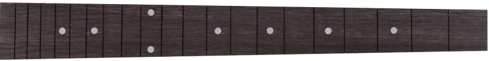

Как начать играть на гитаре с табулатурой? Настройте свой инструмент и начните свой музыкальный путь!
Используйте тюнер для настройки своего инструмента. Учтите, что самая тонкая
струна считается первой, а самая толстая - шестой.
Что такое табулатура?
Табулатура, или табы, представляет собой способ записи музыки специально для различных струнных
инстурментов.
При таком способе записи используются цифры в качестве обозначения лада и горизонтальные полосы в
качестве обозначения струны,
нумерация струн на табулатуре происходит от первой к шестой. Это делает процесс изучения новых песен
более доступным для новичков.
Как быстрее ориентироваться на грифе?
Новичкам, как правило тяжело с ходу ориентироваться на грифе, так что отличным вариантом будет смотреть
на инкрустации в вашей гитары.
Инкрустация - перламутровые метки расположенные на третьем, пятом, седьмом, девтом, двенадцатом,
пятнадцатом и семнадцатом ладах:

Перейдем к практике!
Давайте попробуем сыграть первые ноты с помощью табов. Перед вами представлен кусочек произведения:
Smoke on the Water группы Deep Purple.
Можно заметить, что весь отрывок играется только на шестой (самой толстой) струне, так как это
специально упрощённая версия для тех, кто только начал делать первые шаги.
Пожалуйста, прослушайте верный вариант перед попыткой сыграть самому, это упростит понимание того, как
должно звучать произведение.
Сыграем первые аккорды!
Ниже представленна табулатура произведения: Seven Nation Army группы White Stripes, на
которой мы видим цифры расположенные на шестой и пятой струнах,
поскольку номера ладов стоят друг под другом, это обозначает, что нам необходимо зажать их одновременно,
это и образует наши аккорды. В данном случае - это квинтаккорды,
их отличительная черта в том, что они не делятся на мажорные и минорные.